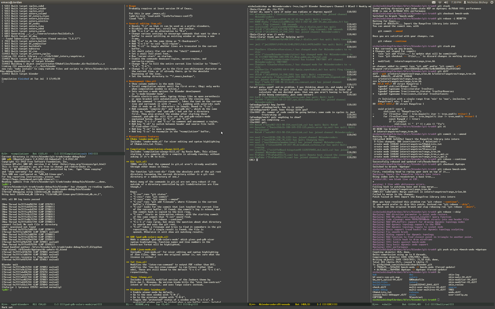

Introduction à GNU Emacs
Vaitea OPUU
Motivations pour la Bioinfo
- Édition de programmes (R, C, Python, Java, PHP, …)
- Rédaction de rapports
- Lignes de commandes
- Présentations
- …
En gros
- On lit du texte
- On écrit du texte
- Ça risque de devenir votre boulot

Choix de l'éditeur
- Emacs 1976
- Vim
- …
Pourquoi Vim ou Emacs ?
- performances
- updates réguliers
- portable (GNU & linux, mac, windows …)
- open source
- longévité
Questions ?
- C'est quoi ?
- C'est long à apprendre ?
- À quoi ça peut servir ?
Spacemacs
Vim & Emacs du prêt à l'emploi
Buffers
Déplacements et raccourcis
Les macros
Snippets
Écrire du code avec ça
int main(int argc, char *argv[])
{
printf("Hello world !!!");
return 0;
}
Interaction avec le shell
Toujours dans Emacs
ORG MODE
- Prise de notes
- Agenda
- TODO list
- lateX
- Exécution de codes
- …